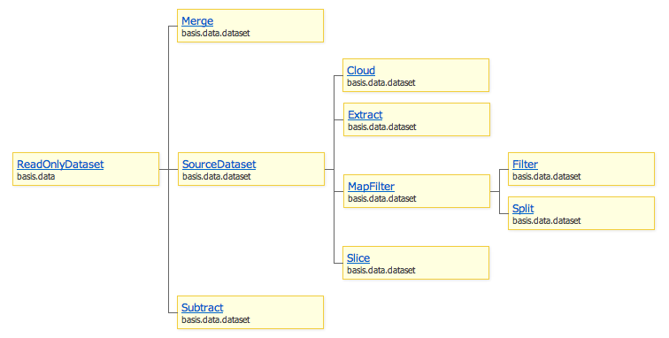

Данное пространство имен описывает различные автоматические наборы. Данный вид наборов не управляет своим составом напрямую, а зависит от состава другого набора (или наборов) и некоторых заданных правил.

Автоматические наборы можно воспринимать как операции над множествами. Так basis.data.dataset экспортирует классы, которые позволяют совершать следующие операции:
Merge - объединение нескольких множеств в одно, по правилу (объединение, разность, дополнение и др);
Subtract - вычитание одного множества из другого;
Filter - подмножество;
Slice - срез;
Split - разбиение на подмножества 1:1 (группировка);
Cloud - разбиение на подмножества 1:M;
Extract - разворачивание;
Экземпляры данного класса объединяет составы нескольких наборов по определенному правилу.
Набор источников можно задать при создании, с помощью свойства sources, либо менять в дальнешем методами:
addSource(source) - добавить источник;
removeSource(source) - удалить источник;
setSources(sources) - задать новый нобор источников;
clear() - удалить все источники (очищает набор);
При изменении состава источников выбрасывается событие sourcesChanged. Данное событие аналогично itemsChanged, только в дельте хранятся добавленные и удаленные источники, а не элементы набора. С версии 1.3 для источников применяется resolveDataset, для получения ссылок на набор.
Правило (свойство rule) определяет, каким образом объединяются наборы. Правило получает два значения: count - количество вхождений объекта (в скольких источниках он присутствует), и sourceCount - количество источников. По умолчанию определены следующие правила:
UNION – объединение, есть хотя бы в одном источнике;
INTERSECTION – пересечение, есть во всех источниках;
DIFFERENCE – разность, есть только в одном источнике;
MORE_THAN_ONE_INCLUDE – не уникальное значение, есть в двух и более источниках;
AT_LEAST_ONE_EXCLUDE – отсутствует хотя бы в одном источнике;
Набор хранящий результат вычитания одного набора из другого.
Уменьшаемое хранится в свойстве minuend, его можно задать методом setMinuend. Вычитаемое хранится в свойстве subtrahend, которое можно менять методом setSubtrahend. Оба операнда можно изменить разом используя метод setOperands. С версии 1.3 для обоих операндов используется resolveDataset.
Когда меняется уменьшаемое выбрасывается событие minuendChanged, а при изменении вычитаемого – subtrahendChanged. Если один из аперандов не задан, то набор будет пустым.
var data = basis.data.wrap([1, 2, 3, 4, 5, 6, 7], true);
var foo = new basis.data.Dataset({
items: data.slice(0, 5) // 1, 2, 3, 4, 5
});
var bar = new basis.data.Dataset({
items: data.slice(2, 6) // 3, 4, 5, 6
});
var subtract = new basis.data.dataset.Subtract({
minuend: foo,
subtrahend: bar
});
console.log(subtract.getItems().map(function(item){ return item.data.value; }));
// > [1, 2]
foo.add(data[6]);
console.log(subtract.getItems().map(function(item){ return item.data.value; }));
// > [1, 2, 7]
bar.remove(data[2]);
console.log(subtract.getItems().map(function(item){ return item.data.value; }));
// > [1, 2, 7, 3]
[TODO]
Класс-наследник SourceDataset, содержит limit элементов из источника source, отсортированных по правилу rule, начиная со смещения offset.
Правило должно возвращать значение, по которому будут сортироваться элементы источника. Правило задается свойством rule, а направление сортировки – свойством orderDesc. Правило и направление сортировки можно изменить методом setRule(rule, orderDesc). Когда меняется правило выбрасывается событие ruleChanged.
Максимальное количество элементов задается свойством limit, которое можно изменить методом setLimit(limit). Смещение, или количество элементов которое должно быть пропущено, задается свойством offset и меняется методом setOffset(offset). Одновременно поменять оба свойства можно методом setRange(offset, limit). Когда меняется смещение или лимит выбрасывается событие rangeChanged(oldOffset, oldLimit).
var dataset = new basis.data.Dataset({
items: basis.data.wrap([1, 2, 3, 4, 5], true)
});
var top3max = new basis.data.dataset.Slice({
source: dataset,
rule: 'data.value',
orderDesc: true,
limit: 3
});
console.log(top3max.getItems().map(function(item){ return item.data.value; }));
// console> [3, 4, 5]
var obj = new basis.data.Object({ data: { value: 123 } });
dataset.add(obj);
console.log(top3max.getItems().map(function(item){ return item.data.value; }));
// console> [4, 5, 123]
obj.update({ value: 4.5 });
console.log(top3max.getItems().map(function(item){ return item.data.value; }));
// console> [4, 5, 4.5]
[TODO]
До версии 1.3 класс назывался
Subset.
Экземпляры этого класса добавляют в свой состав из источника только те элементы, для которых правило возвращает положительный результат (приводимое к true).
Функция-фильтр хранится в свойстве rule, ее можно изменить методом setRule.
Список событий, когда должно перевычисляться правило задается только при создании набора свойством ruleEvents. Значением этого свойства может быть строка (список событий разделенных пробелом) или массив строк. По умолчанию у элементов источника слушается событие update.
var data = basis.data.wrap([1, 2, 3, 4, 5], true);
// создаем набор-источник (нужен для примера)
var dataSource = new basis.data.Dataset({
items: data
});
// создаем подмножество
var filter = new basis.data.dataset.Filter({
source: dataSource, // задаем источник
rule: function(item){ // правило
return item.data.value % 2; // только нечетные
}
});
console.log(filter.getItems().map(function(item){ return item.data.value; }));
// > [1, 3, 5]
data[0].update({ value: 0 });
console.log(filter.getItems().map(function(item){ return item.data.value; }));
// > [3, 5]
data[1].update({ value: 33 });
console.log(filter.getItems().map(function(item){ return item.data.value; }));
// > [3, 5, 33]
dataSource.remove([data[0], data[1], data[2]]);
console.log(filter.getItems().map(function(item){ return item.data.value; }));
// > [5]
Split позволяет раделить элементы на подмножества по результату выполнения функции-правила (свойство rule). При этом членами набора становятся наборы-группы, по которым распределяются элементы набора-источника (свойство source). Каждый элемент может находиться только в одной группе.
Правило задается при создании через свойство rule, меняется методом setRule. В качестве значения можно указать функцию или строку – значение пропускается через basis.getter. Функция должна возвращать некоторое значение, которое будет являться ключом группы. Для сравнения значение приводится к строке, а если значение экземпляр basis.data.Object, то его идентификатор (basisObjectId). Для каждого нового значения создается новое подмножество – группа, и добавляется в набор. Если группа становится пустой, то она удаляется из набора.
Группа это экземпляр класса basis.data.DatasetWrapper. Значение, для которого она была создана, хранится в свойстве ruleValue. В качестве dataset задан набор, который содержит все элементы группы. Если значением группы является экземпляр basis.data.Object, то он будет назначен делегатом.
Для получения объекта группы используется метод getSubset, которому передается ключ группы. Группа возвращается, только если для значения уже существует группа. Если требуется получить группу и при необходимости создать ее, то вторым параметром передается конфиг для группы или true.
Класс для объекта группы определяется свойством subsetWrapperClass (по умолчанию basis.data.DatasetWrapper), а класс для набора – subsetClass (по умолчанию basis.data.ReadOnlyDataset). Управляет группами экземпляр класса basis.object.KeyObjectMap. Его можно задать при создании набора, указав в свойстве keyMap экземпляр basis.object.KeyObjectMap или конфиг для него.
Набор слушает изменения в элементах источника и перемещает элемент из одной группы в другую, при необходимости.
var cities = new basis.data.Dataset({
items: basis.data.wrap([
{ city: 'Moscow', country: 'Russia' },
{ city: 'St. Peterburg', country: 'Russia' },
{ city: 'Orenburg', country: 'Russia' },
{ city: 'Washington', country: 'USA' },
{ city: 'New York', country: 'USA' },
], true)
});
var splitByCountry = new basis.data.dataset.Split({
source: cities,
rule: 'data.country'
});
console.log(splitByCountry.getItems());
// console> [{ ruleValue: 'Russia', .. }, { ruleValue: 'USA', .. }]
console.log(splitByCountry.getSubset('Russia', true).itemCount);
// console> 3
console.log(splitByCountry.getSubset('Russia', true).getItems().map(function(item){
return item.data.city;
}));
// console> [{ data: { city: 'Moscow', .. }, .. }, .. ]
console.log(splitByCountry.getSubset('Unknown'));
// console> undefined
[TODO]
[TODO]